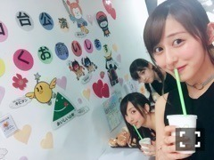
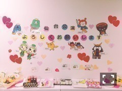

| 2016/08 14 Sun | 斎藤ちはる 仙台づくし(´>∀<｀)ゝ |
ちはるーむへようこそ(｡･o･｡)ﾉ
今日で仙台公演が終わりました！！
来てくれた皆さん、応援してくれた皆さん、
本当に有難うございましたm(_ _)m
ライブとても楽しかったよ〜〜！！
２公演とも何事もなく。
楽しい思い出のみ♪
残すところ、全国ツアーも
福岡と神宮だけになって
あっという間に夏が通り過ぎていってます！
本当にあっという間！
10代最後の夏だけど
気付いたら終わってそうだな〜(｡･o･｡)ﾉ
大切に過ごさなきゃね♪
でもあっという間に感じるくらい
目まぐるしい毎日を過ごさせて頂いてるのには
本当に感謝してます！
有難いです。
精進。
仙台公演終わって、
ずんだシェイクと素敵な壁と
写真を撮っていたら
次々と顔をひょっこり出してくる
メンバー達。
可愛い(﹡ˆ ˆ﹡)
みさ！

まいちゅん、さゆりん！
不意打ち過ぎて、思わずにやけちゃった。。笑
因みに私が撮ろうとしていた
素敵な壁！

ご当地キャラクターが沢山！
わざわざ私達のためにこんな素敵に
彩って頂いて嬉しい( ;o; )♡
-------------------------♡
今日のちは"食"散歩は〜〜？！
仙台ご当地シリーズ(｡･o･｡)ﾉ
・凍天(しみてん)
見た目は揚げドーナツみたいなんだけど、
なんと中にはよもぎ餅が入ってます！
アンダーライブ東北シリーズの時に
初めて知って食べた時に
美味しすぎて衝撃が走りました...！！
食べ応えもあって
そして美味しくて。
とてもとてもオススメです♪
・ずんだシェイク
正直、ずんだを食わず嫌いしていて
ずんだシェイクも
飲まないつもりだったんですけど
花奈に一口もらって飲んでみたら
なんという飲みやすさ！！
なんという絶妙な甘さ！！
これまた衝撃が走って
ずんだシェイクゲットしに行きました。
こんなに美味しいから
毎日でも飲みたいくらい(_ _).｡o○
それくらいハマりました！
メンバーも美味しい美味しい言って
みんなで飲んでたよ(﹡ˆ ˆ﹡)
・喜久福
これ写真はないんだけど
元々家族で大好きで
わざわざお取り寄せをするほど！
お餅の中に餡子とクリーム入っている
スイーツです♪
沢山種類があって迷うけど、
わたしのオススメは
抹茶と、生クリーム！！
以上挙げた３つ、
良ければ皆さん食べてみてください\( ˆoˆ )/
とっても美味しいから！！
保証するから！！
(´>∀<｀)ゝ
-------------------------♡
♬ ChihaMusic
「東京VICTORY」サザンオールスターズさん
この曲はオリンピック真っ只中の今
ぴったりじゃないかなと思います！
誰かを元気にするにも、
自分が元気になるのにも、
どっちもできる曲♪
桑田さん本当素敵な歌詞をお書きになる。
サザン大好きです！
今日は仙台づくしのブログでした！
全国ツアーは色々な地域にいけるから
楽しいです( ◦˙ ˙◦ )
そして今日もちはるーむめいとさんは
よく見えました。
ハッキリと！！
クッキリと！！
輝いて見えました(﹡ˆ ˆ﹡)
いつも支えてくれて応援してくれて
ありがとう。
おやすみ！
斎藤ちはる